Chapter 3: Manipulator Kinematics PDF p.1
3.1 Overview PDF p.2
This chapter covers the following topics:
- Link Description and Link-connection description
- Convention for Affixing Frames to Links
- Identification of Denavit & Hartenberg ParametersA minimal set of four parameters ($a$, $\alpha$, $d$, $\theta$) that completely describe the geometry of each link and joint in a serial manipulator. Introduced by Jacques Denavit and Richard Hartenberg in 1955.Denavit & Hartenberg (1955), "A Kinematic Notation for Lower-Pair Mechanisms Based on Matrices"; Craig, Introduction to Robotics, Ch. 3
- Manipulator Kinematics
3.2 Link Description PDF p.3
Definitions
Kinematics: The science of motion that treats objects without regard to the forces that cause it.
Link: A rigid body that defines the relationship between two neighboring joint axes of a manipulator.
Joint: A connection between a neighboring pair of links. Joints form the connection that allows relative motion.
Lower Pairs: Joints in which the relative motion between a pair of bodies is characterized by two surfaces sliding over one another.
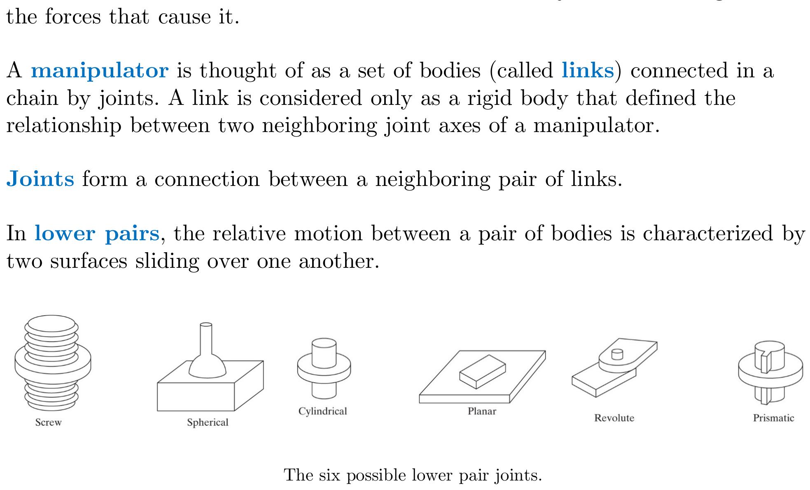
Conventions
Link Numbering Convention: The links are numbered starting from the immobile base of the arm, which is called link 0. The first moving body is link 1, and so on, out to the free end of the arm, which is link $n$.
Joint Axis Convention: Joint axis $i$ is defined by a line in space, or a vector direction, about which link $i$ rotates relative to link $i - 1$.
Link Length
Link LengthThe distance between two consecutive joint axes, measured along their unique common perpendicular. It is a fixed geometric property of the physical link and does not change during robot motion.Craig, Introduction to Robotics, §3.2; MSE492 Ch. 3, PDF p.4 ($a_{i-1}$): For any two axes in 3-space, there exists a well-defined measure of distance, the link length $a_{i-1}$, that is along a line mutually perpendicular to both axes.
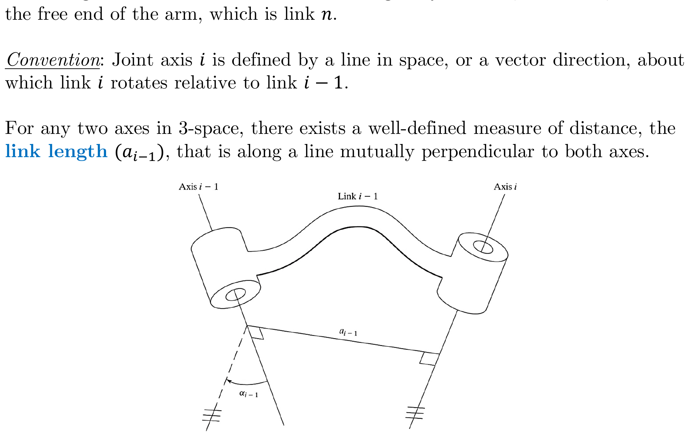
Link Twist
Link TwistThe angle between two consecutive joint axes, measured about the common perpendicular using the right-hand rule. Like link length, it is a fixed property of the link's geometry.Craig, Introduction to Robotics, §3.2; MSE492 Ch. 3, PDF p.5 ($\alpha_{i-1}$): Defines the relative location of two axes. The angle is measured from axis $a_{i-1}$ to axis $a_i$ in the right-hand sense about $a_{i-1}$.
Notes on Link Twist:
- For right-hand sense, $a_{i-1}$ is given the direction pointing from axis $i - 1$ to axis $i$.
- In the case of intersecting axes, twist is measured in the plane containing both axes, but the sense of $\alpha_{i-1}$ is lost. In this case, the sign of $\alpha_{i-1}$ can be assigned arbitrarily.
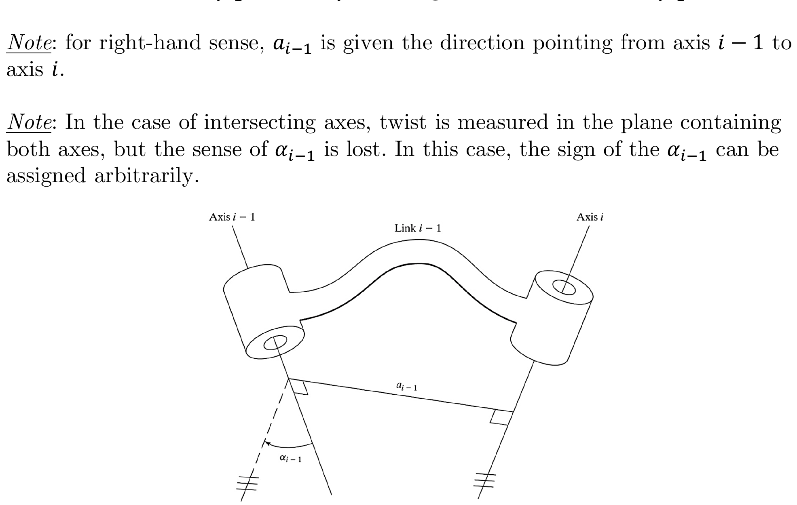
Why Exactly Four DH Parameters Suffice
Theorem: Any two lines (joint axes) in 3D space can be related by exactly four scalar parameters: two distances and two angles.
Consider two arbitrary lines $\ell_1$ and $\ell_2$ in three-dimensional Euclidean space. There are three cases:
- Skew lines (the general case): Two lines that neither intersect nor are parallel are called skew. A fundamental theorem of 3D geometry states that any two skew lines possess a unique common perpendicular -- a line segment that meets both $\ell_1$ and $\ell_2$ at right angles. This is the shortest distance between the two lines. (See: Skew Lines - Wikipedia)
- Intersecting lines: The common perpendicular has zero length ($a = 0$), but the angle between the lines is still well-defined.
- Parallel lines: The angle is zero ($\alpha = 0$), but the perpendicular distance is well-defined. The common perpendicular is not unique in this case, but this freedom is absorbed by choosing the origin location.
The four parameters arise as follows. Given a common perpendicular direction (the $\hat{X}$ axis in DH convention), construct a coordinate system:
- $a_{i-1}$ (link length): The length of the common perpendicular segment between the two axes. This is the unique shortest distance between the two skew lines.
- $\alpha_{i-1}$ (link twist): The angle between the directions of $\ell_1$ and $\ell_2$, measured in a plane perpendicular to the common perpendicular. Together, $(a, \alpha)$ fully fix the relative geometry of the two lines themselves.
However, we also need to locate where on each axis the coordinate frame sits. This introduces two more parameters measured along the joint axis ($\hat{Z}$ direction):
- $d_i$ (link offset): The signed distance along the joint axis between the feet of two consecutive common perpendiculars.
- $\theta_i$ (joint angle): The angle between the two consecutive common perpendiculars, measured about the joint axis.
Why not more or fewer? A general rigid-body transformation in 3D has 6 degrees of freedom (3 rotation + 3 translation). The DH convention imposes 2 constraints by requiring that the $\hat{X}_i$ axis is always perpendicular to both $\hat{Z}_i$ and $\hat{Z}_{i+1}$ and passes through (or points along) the common normal. These 2 constraints reduce $6 - 2 = 4$ free parameters, which are exactly the four DH parameters.
This is why the DH convention is minimal: no fewer than 4 parameters can describe the general relationship between consecutive joint axes, and no more are needed.
Reference: Denavit, J. and Hartenberg, R.S. (1955). "A Kinematic Notation for Lower-Pair Mechanisms Based on Matrices." Journal of Applied Mechanics, 22, 215-221. Also see Chapter 3 of Murray, Li, and Sastry, A Mathematical Introduction to Robotic Manipulation (1994) for a modern treatment.
Intuitive Understanding of Link Parameters
Think of it this way: Imagine you are standing on joint axis $i-1$ and looking toward joint axis $i$.
- Link length $a_{i-1}$: "How far apart are the two axes?" -- measured along the unique shortest path between them (the common perpendicular).
- Link twist $\alpha_{i-1}$: "How tilted is the next axis relative to this one?" -- if you look end-on down the common perpendicular, this is the angle between the two axes you see.
Now imagine you are standing on joint axis $i$, looking along it:
- Link offset $d_i$: "How far apart are the two common perpendiculars that meet at this axis?" -- measured along the axis itself.
- Joint angle $\theta_i$: "How much have I rotated from one common perpendicular to the next?" -- measured about this joint axis.
Key insight: The two "link parameters" ($a$ and $\alpha$) describe the physical shape of the link -- they are constants determined by the robot's mechanical design. The "joint parameters" ($d$ and $\theta$) describe the connection at the joint -- one of them is always the variable (the thing that moves). For a revolute joint, $\theta_i$ is variable; for a prismatic joint, $d_i$ is variable.
Link Length and Twist from Mechanical Drawing
Problem: Figure shows the mechanical drawings of a robot link. If this link is used in a robot, with bearing "A" used for the lower-numbered joint, identify the length and twist of the link. Assume that holes are centered in each bearing.
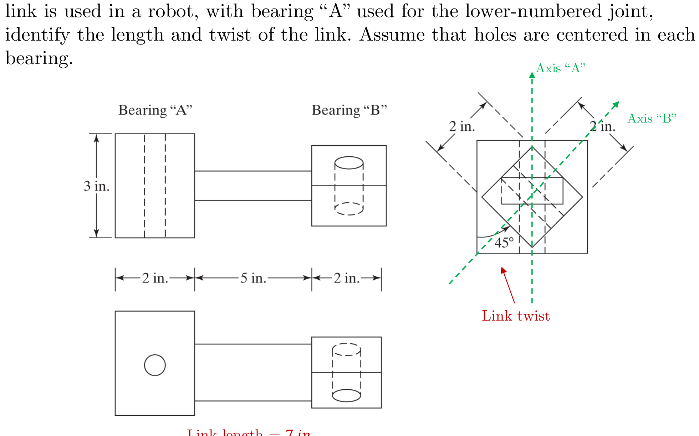
- Link length = 7 in. (the distance along the common perpendicular between Axis A and Axis B)
- Link twist = $45°$ (the angle between the two joint axes, measured by viewing down the common perpendicular from Axis A to Axis B)
3.3 Link-Connection Description PDF p.7
Intermediate Links in the Chain
Link OffsetThe signed distance along a joint axis between the points where two consecutive common perpendiculars intersect that axis. For a prismatic joint, $d_i$ is the joint variable; for a revolute joint, it is a fixed constant.Craig, Introduction to Robotics, §3.3; MSE492 Ch. 3, PDF p.7 ($d_i$): The distance along the joint axis between two incident common normals ($a_{i-1}$ and $a_i$). The link offset is variable if joint $i$ is prismatic.
Joint AngleThe angle of rotation between two consecutive common perpendiculars, measured about the joint axis using the right-hand rule. For a revolute joint, $\theta_i$ is the joint variable that changes as the robot moves.Craig, Introduction to Robotics, §3.3; MSE492 Ch. 3, PDF p.7 ($\theta_i$): The rotation between two incident common normals about the joint axis. The joint angle is variable for revolute joints.
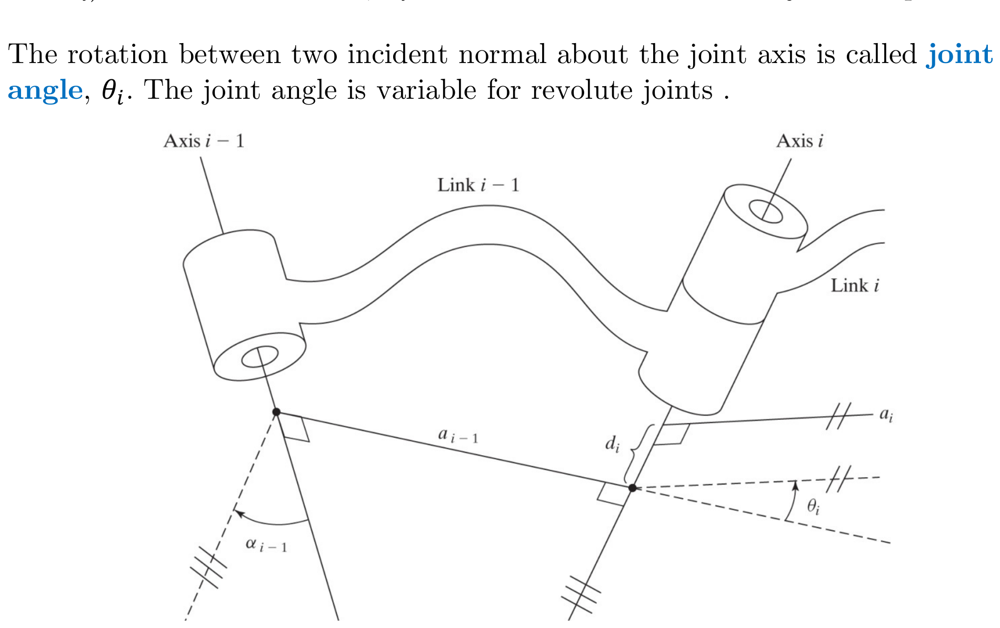
First and Last Links in the Chain PDF p.8
Convention: Link length $a_i$ and link twist $\alpha_i$ depend on joint axes $i$ and $i + 1$, as shown before. At the ends of the chain, the convention is to assign zero to these quantities:
$$a_0 = a_n = 0 \quad \text{and} \quad \alpha_0 = \alpha_n = 0$$First link (link 0) conventions:
- If joint 1 is revolute, the zero position for $\theta_1$ may be chosen arbitrarily; $d_1 = 0$ is the convention used here.
- If joint 1 is prismatic, the zero position of $d_1$ may be chosen arbitrarily; $\theta_1 = 0$ is the convention used here.
Denavit & Hartenberg Parameters PDF p.8
The four DH parameters that fully describe each link and its connection:
Link Parameters (describe the link geometry):
- Link length, $a_{i-1}$
- Link twist, $\alpha_{i-1}$
- Link offset, $d_i$
Joint Parameter (describes the joint variable):
- Joint angle, $\theta_i$
Animated Introduction to DH Parameters
DH Reference Frame Layout Animation (YouTube)
- URL: https://www.youtube.com/watch?v=rA9tm0gTln8
- Description: A widely-referenced animation that visually demonstrates how the Denavit-Hartenberg convention works. It shows, step by step, how coordinate frames are attached to links and how the four DH parameters relate to the geometric quantities between consecutive frames.
- Best for: Getting your first visual intuition of what $a$, $\alpha$, $d$, and $\theta$ mean geometrically.
A general rigid-body transformation in 3D has 6 degrees of freedom (3 translational + 3 rotational). However, the DH convention imposes 2 constraints by requiring that the $\hat{X}_i$ axis is always perpendicular to both $\hat{Z}_{i-1}$ and $\hat{Z}_i$ and lies along their common normal. These 2 constraints reduce the free parameters from 6 to exactly 4.
From a geometric perspective: two arbitrary lines in 3D space (the consecutive joint axes) have a unique common perpendicular (unless they are parallel, in which case the perpendicular direction is unique but its location is not). This common perpendicular, together with the two axes, defines exactly four independent scalar measurements: two distances ($a$ along the perpendicular, $d$ along the axis) and two angles ($\alpha$ between the axes, $\theta$ between the perpendiculars).
Fewer than 4 parameters cannot capture the full generality of two skew lines in space. More than 4 would be redundant given the constraints imposed by the frame placement rules.
Peter Corke's Robot Academy — DH Notation
Denavit-Hartenberg Notation (Robot Academy)
- URL: https://robotacademy.net.au/lesson/denavit-hartenberg-notation/
- Description: Professor Peter Corke (Queensland University of Technology) explains the DH notation method for describing the structure of a serial-link manipulator. Part of the Robot Academy series. Corke is the author of Robotics, Vision and Control and the creator of the widely-used Robotics Toolbox for MATLAB/Python.
- Best for: A systematic, textbook-level presentation of DH notation with clear examples.
- See also: Corke's paper "A simple and systematic approach to assigning Denavit-Hartenberg parameters"
Robotics Unveiled — Forward Kinematics with DH Parameters
Robotics Part 17: Forward Kinematics using the DH Convention
- URL: https://www.roboticsunveiled.com/robotics-forward-kinematics-denavit-hartenberg-parameters/
- Description: A detailed walkthrough of using DH parameters to solve forward kinematics problems. Covers the full process from identifying joint axes to constructing the final transformation matrix, with worked examples.
- Best for: Seeing the entire DH pipeline from start to finish on concrete robot examples.
In the DH convention, the parameter $a_i$ (link length) represents:
3.4 Convention for Affixing Frames to Links PDF p.9
Frame Assignment Rules — Intermediate Links PDF p.9
The rules for attaching coordinate frame $\{i\}$ to link $i$:
- The $\hat{Z}$-axis of frame $\{i\}$, called $\hat{Z}_i$, is coincident with the joint axis $i$.
- The origin of frame $\{i\}$ is located where the $a_i$ perpendicular intersects the joint $i$ axis.
- $\hat{X}_i$ points along $a_i$ in the direction from joint $i$ to $i + 1$.
- In the case of $a_i = 0$, $\hat{X}_i$ is normal to the plane of $\hat{Z}_i$ and $\hat{Z}_{i+1}$. Then, $\alpha_i$ is measured in the right-hand sense about $\hat{X}_i$.
- $\hat{Y}_i$ is formed by the right-hand rule using $\hat{X}_i$ and $\hat{Z}_i$ in Cartesian frame.
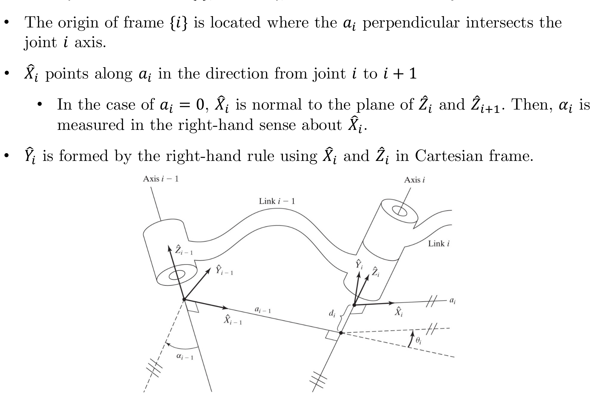
The key insight is minimality. By forcing $\hat{Z}_i$ to lie along joint axis $i$ and placing the origin where the common perpendicular meets that axis, the DH convention eliminates all redundant degrees of freedom in frame placement. If you placed frames at arbitrary locations, you would need up to 6 parameters per link (a full homogeneous transform), and many of those parameters would be coupled in non-obvious ways.
The specific placement rules guarantee that each of the 4 DH parameters controls exactly one geometric quantity:
- $\hat{Z}_i$ along the joint axis means $\theta_i$ (or $d_i$) directly represents the joint motion.
- $\hat{X}_i$ along the common normal means $a_i$ and $\alpha_i$ directly measure the link's shape.
- The origin at the intersection of the common normal and the joint axis means $d_i$ is a simple signed distance along one axis.
This decoupling is what makes the DH convention so powerful: each parameter has a clear physical meaning, and the resulting 4×4 transformation matrix has a clean, systematic structure that is the same for every link.
Mistake 1: Placing the origin at the wrong location
- Wrong: Placing the origin of frame $\{i\}$ at the physical joint location or at the center of the link.
- Right: The origin of frame $\{i\}$ goes where the common perpendicular $a_i$ (between axis $i$ and axis $i+1$) intersects axis $i$. This may not be on the physical link at all!
- How to check: Verify that your origin lies exactly on the $\hat{Z}_i$ axis AND on the line segment (or its extension) of the common perpendicular.
Mistake 2: Confusing which subscript goes with which parameter
- The four DH parameters for row $i$ of the table are: $\alpha_{i-1}$, $a_{i-1}$, $d_i$, $\theta_i$.
- Note the mixed subscripts! The link parameters ($a$ and $\alpha$) have subscript $i-1$, while the joint parameters ($d$ and $\theta$) have subscript $i$. This is because $a_{i-1}$ and $\alpha_{i-1}$ describe link $i-1$ (the link before joint $i$), while $d_i$ and $\theta_i$ describe what happens at joint $i$.
- Mnemonic: "Link parameters look back, joint parameters look here."
Mistake 3: Getting the sign of the twist angle wrong
- $\alpha_{i-1}$ is the angle from $\hat{Z}_{i-1}$ to $\hat{Z}_i$, measured about $\hat{X}_{i-1}$ using the right-hand rule.
- Students often measure the acute angle and forget the sign. Always use the right-hand rule: curl your fingers of your right hand from $\hat{Z}_{i-1}$ toward $\hat{Z}_i$ around $\hat{X}_{i-1}$. Your thumb should point in the $+\hat{X}_{i-1}$ direction for a positive angle.
- Common error: getting $+90°$ vs $-90°$ confused. This flips signs in the transformation matrix and cascades errors through the entire forward kinematics.
Mistake 4: Forgetting that $\hat{X}_i$ must point along the common perpendicular
- Students sometimes assign $\hat{X}_i$ in an arbitrary direction. It MUST point along the common perpendicular from axis $i$ toward axis $i+1$.
- When axes intersect ($a_i = 0$), there is no unique common perpendicular, so $\hat{X}_i$ is chosen perpendicular to the plane containing both $\hat{Z}$ axes. This is where you have a choice of direction, and it is easy to get the sign of $\alpha$ wrong.
Mistake 5: Not applying end-link conventions
- For the base frame $\{0\}$: it coincides with frame $\{1\}$ when the first joint variable is zero. This forces $a_0 = 0$, $\alpha_0 = 0$.
- For the end-effector frame $\{N\}$: $\hat{X}_N$ aligns with $\hat{X}_{N-1}$ when $\theta_N = 0$ (revolute) or is chosen so $\theta_N = 0$ (prismatic). This forces $a_N = 0$, $\alpha_N = 0$.
- Forgetting these conventions leads to extra parameters in the first or last rows of the DH table.
A Checklist for Frame Assignment
If you find the textbook rules hard to follow all at once, try this systematic checklist approach (adapted from Peter Corke's method):
Step 0 — Draw the robot in its zero configuration. Sketch all joint axes as infinite lines. Label them axis 1, axis 2, ..., axis $n$.
Step 1 — Assign all $\hat{Z}$ axes first. For each joint $i$: $\hat{Z}_i$ lies along joint axis $i$. Choose the positive direction consistently (usually "up" or "outward").
Step 2 — Find all common perpendiculars. For each pair of consecutive axes ($i$ and $i+1$), identify the common perpendicular. Mark the point where this perpendicular meets axis $i$ — that is the origin of frame $\{i\}$.
Step 3 — Assign all $\hat{X}$ axes. $\hat{X}_i$ points along the common perpendicular from axis $i$ toward axis $i+1$. Special cases:
- If axes intersect: $\hat{X}_i = \hat{Z}_i \times \hat{Z}_{i+1}$ (or its negative — your choice, but be consistent).
- If axes are parallel: the common perpendicular is not unique; pick any convenient perpendicular.
Step 4 — Complete with $\hat{Y}$ axes. $\hat{Y}_i = \hat{Z}_i \times \hat{X}_i$ (right-hand rule). You never need to compute $\hat{Y}$ explicitly for the DH table, but draw it to verify your frame is right-handed.
Step 5 — Handle base and end-effector. Apply the special conventions for frames $\{0\}$ and $\{N\}$.
Step 6 — Read off the DH parameters. Walk through each row of the table using the definitions:
- $a_i$: distance from $\hat{Z}_i$ to $\hat{Z}_{i+1}$ along $\hat{X}_i$
- $\alpha_i$: angle from $\hat{Z}_i$ to $\hat{Z}_{i+1}$ about $\hat{X}_i$
- $d_i$: distance from $\hat{X}_{i-1}$ to $\hat{X}_i$ along $\hat{Z}_i$
- $\theta_i$: angle from $\hat{X}_{i-1}$ to $\hat{X}_i$ about $\hat{Z}_i$
Reference: Corke, P. (2014). "A simple and systematic approach to assigning Denavit-Hartenberg parameters." Available at: https://petercorke.com/doc/simple_systematic.pdf
DH Parameter Visualizers
Several interactive online tools let you experiment with DH parameters and see the resulting robot configuration in real time:
- VisRo Robotics — DH Parameter Visualization
- Standard DH: https://vis-ro.web.app/robotics/dh-model
- Modified DH: https://vis-ro.web.app/robotics/modified-dh-model
- Enter DH parameter values and see the coordinate frames and robot links update in 3D.
- Glowbuzzer Kinematics Visualizer
- MATLAB Robotics Toolbox
interactiveRigidBodyTreelets you click and drag joints to explore kinematics.- Build a robot from DH parameters: MATLAB docs
- Wolfram Demonstrations: DH Parameters for a Three-Link Robot
- Peter Corke's Robotics Toolbox for Python
Frame Assignment Rules — First Link (Frame {0}) PDF p.10
First link: A non-moving frame is attached to the base of the robot, or link 0, called frame $\{0\}$. It coincides with frame $\{1\}$. Therefore, we always have $a_0 = 0$ and $\alpha_0 = 0$.
- If joint 1 is revolute, link offset is $d_1 = 0$.
- If joint 1 is prismatic, joint angle is $\theta_1 = 0$.
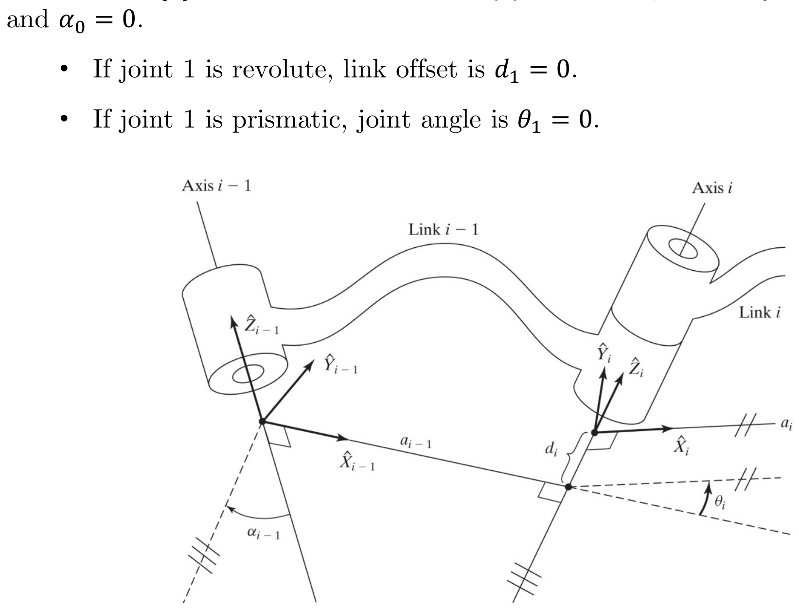
Frame Assignment Rules — Last Link (Frame {N}) PDF p.11
Last link:
- If joint $n$ is revolute, the direction of $\hat{X}_N$ is chosen so that it aligns with $\hat{X}_{N-1}$ when $\theta_n = 0$. The origin of frame $\{N\}$ is chosen so that $d_n = 0$.
- If joint $n$ is prismatic, the direction of $\hat{X}_N$ is chosen so $\theta_n = 0$. The origin of frame $\{N\}$ is chosen at the intersection of $\hat{X}_{N-1}$ and joint axis $n$ when $d_n = 0$.
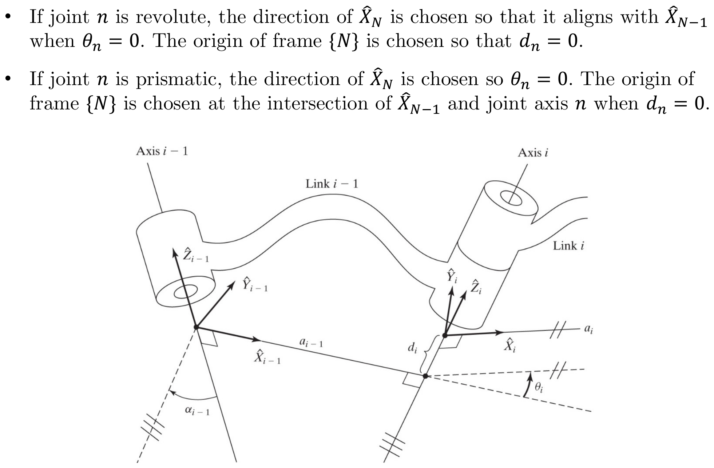
Summary of Link Parameters in Terms of Link Frames PDF p.12
The four DH parameters defined in terms of the assigned link frames:
- $a_i$ = the distance from $\hat{Z}_i$ to $\hat{Z}_{i+1}$ measured along $\hat{X}_i$.
- $\alpha_i$ = the angle from $\hat{Z}_i$ to $\hat{Z}_{i+1}$ measured about $\hat{X}_i$.
- $d_i$ = the distance from $\hat{X}_{i-1}$ to $\hat{X}_i$ measured along $\hat{Z}_i$.
- $\theta_i$ = the angle from $\hat{X}_{i-1}$ to $\hat{X}_i$ measured about $\hat{Z}_i$.
Summary of the Link-Frame Attachment Procedure PDF p.13
Step-by-step procedure:
- Identify joint axes (assume infinite lines).
- Identify the common normal between consecutive axes $i$ and $i + 1$. Assign the origin of the $i^{\text{th}}$ link frame at the point where the common normal intersects axis $i$. If axes $i$ and $i + 1$ intersect, assign the origin at the intersection point.
- Assign the $\hat{Z}_i$ axis pointing along the $i^{\text{th}}$ joint axis.
- Assign the $\hat{X}_i$ axis pointing along the common normal, or if the axes intersect, assign the $\hat{X}_i$ axis to be normal to the axes plane.
- Assign the $\hat{Y}_i$ axis to complete the right-hand frame convention.
- Assign frame $\{0\}$ to be fixed. It coincides with frame $\{1\}$ when $\theta_1 = 0$ or $d_1 = 0$. Assign frame $\{e.e.\}$ at the end-effector's point.
Step-by-Step Frame Assignment Tutorial (AutomaticAddison)
How to Assign Denavit-Hartenberg Frames to Robotic Arms
- URL: https://automaticaddison.com/how-to-assign-denavit-hartenberg-frames-to-robotic-arms/
- Description: A detailed written and visual tutorial that walks through the DH frame assignment process for multiple robot configurations (2-DOF, 6-DOF arms). Includes diagrams at every step showing exactly where each frame goes and why.
- Companion article: How to Find Denavit-Hartenberg Parameter Tables
- Best for: Students who want a second explanation with different diagrams than the textbook.
Five-Step Forward Kinematics (Robotiq)
How to Calculate a Robot's Forward Kinematics in 5 Easy Steps
- URL: https://blog.robotiq.com/how-to-calculate-a-robots-forward-kinematics-in-5-easy-steps
- Description: An industry-oriented tutorial from Robotiq (a collaborative robot company) that distills the forward kinematics process into five actionable steps. Provides a practical, engineer's perspective on DH parameters.
- Best for: Students who find the textbook too abstract and want a more applied perspective.
For a revolute joint, which DH parameter is the joint variable?
Three-Link Planar Arm (RRR Mechanism)
Problem: Figure shows a three-link planar arm. Because all three joints are revolute, this manipulator is sometimes called an $\boldsymbol{RRR}$ (or $\boldsymbol{3R}$) mechanism. A schematic representation is presented.
a) Assign link frames to the mechanism.
b) Find the Denavit-Hartenberg parameters.
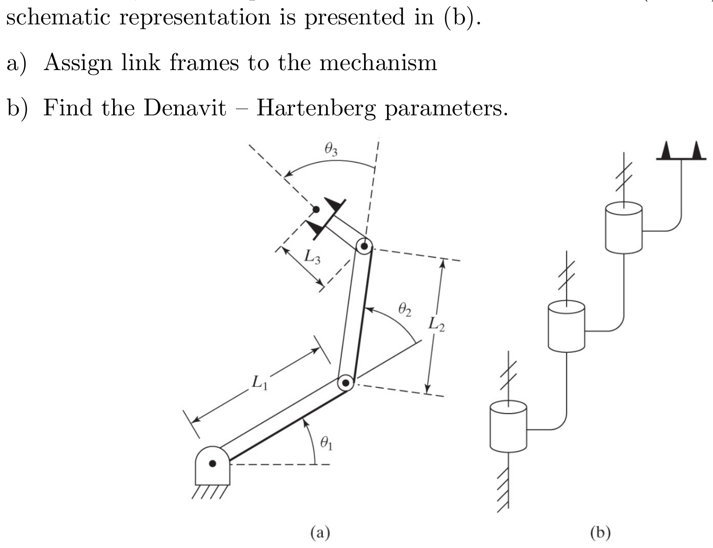
a) Link Frame Assignment PDF p.15
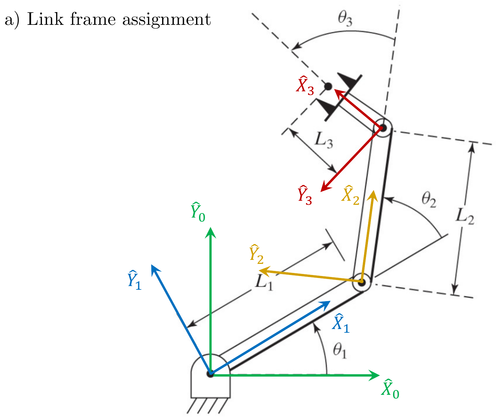
b) Denavit-Hartenberg Parameters PDF p.16
| $i$ | $\alpha_{i-1}$ | $a_{i-1}$ | $d_i$ | $\theta_i$ |
|---|---|---|---|---|
| 1 | $0$ | $0$ | $0$ | $\theta_1$ |
| 2 | $0$ | $L_1$ | $0$ | $\theta_2$ |
| 3 | $0$ | $L_2$ | $0$ | $\theta_3$ |
| e.e. | $0$ | $L_3$ | $0$ | $0$ |
Observations:
- All $\alpha_{i-1} = 0$ because all joint axes are parallel (all $\hat{Z}$ axes point in the same direction, out of the plane).
- All $d_i = 0$ because all joints are revolute and the arm is planar (no offset along any joint axis).
- The link lengths $a_{i-1}$ correspond to the physical link lengths $L_1$, $L_2$, $L_3$.
- For the end-effector row, $\theta = 0$ because $\hat{X}_{e.e.}$ is chosen to align with $\hat{X}_3$ by convention.
3.5 Manipulator Kinematics — Derivation of Link Transformations PDF p.17
Motivation
Now that the frames are attached to the links and the Denavit and Hartenberg parameters are identified, the next step is to establish a quantitative connection between each link frame and its precedent. This process is called forward kinematicsThe problem of computing the position and orientation of a robot's end-effector given all the joint variables. It is solved by multiplying the sequence of DH transformation matrices from base to tool. The inverse problem (given end-effector pose, find joint angles) is called inverse kinematics.Craig, Introduction to Robotics, §3.5; Wikipedia: Forward kinematics.
PDF p.17 The homogeneous transform ${}^{i-1}_i T$ is obtained through a series of intermediate frames, each containing a parameter.
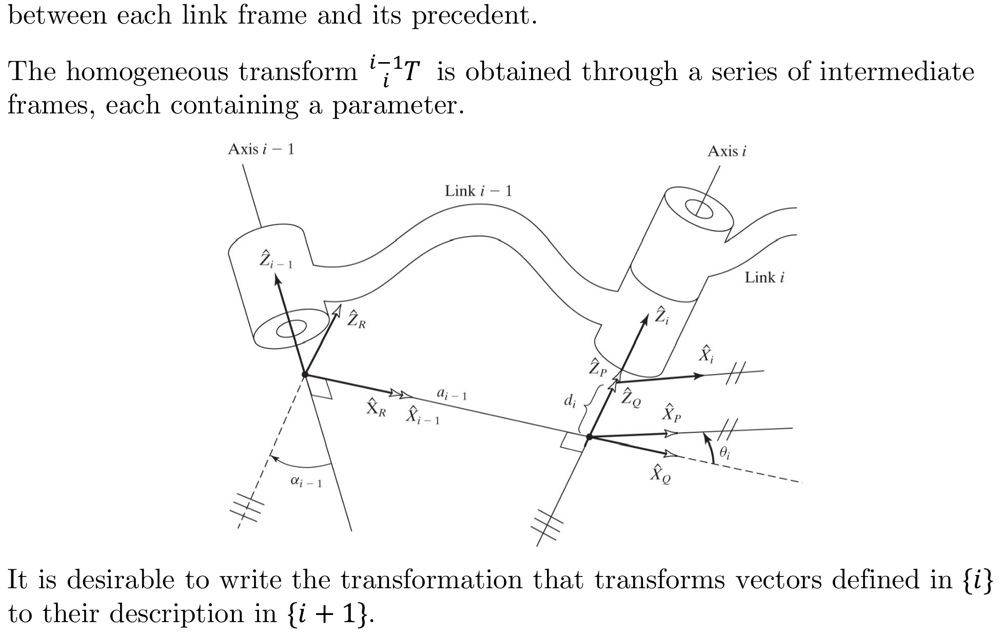
It is desirable to write the transformation that transforms vectors defined in $\{i\}$ to their description in $\{i-1\}$.
Super-Sub-Script Cancellation Law PDF p.18
Applying the "super-sub-script cancellation law":
$${}^{i-1}_i T = {}^{i-1}_R T \; {}^R_Q T \; {}^Q_P T \; {}^P_i T$$Hence:
$${}^{i-1}\boldsymbol{P} = {}^{i-1}_i T \; {}^{i}\boldsymbol{P}$$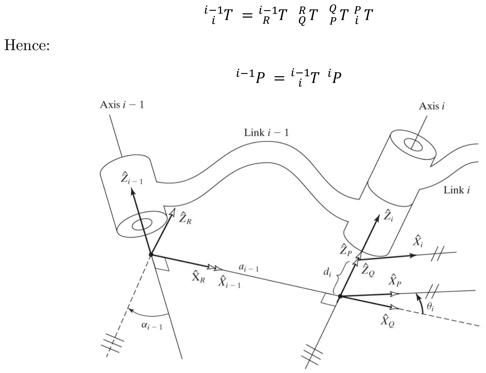
Derivation of the General DH Transformation Matrix PDF p.19
For ${}^{i-1}_i T = {}^{i-1}_R T \; {}^R_Q T \; {}^Q_P T \; {}^P_i T$, the four component transformations are:
Key Equation: General DH Transformation Matrix PDF p.19
Multiplying the four component matrices yields the general link transformation:
$${}^{i-1}_i T = \begin{bmatrix} c\theta_i & -s\theta_i & 0 & a_{i-1} \\ s\theta_i \, c\alpha_{i-1} & c\theta_i \, c\alpha_{i-1} & -s\alpha_{i-1} & -d_i \, s\alpha_{i-1} \\ s\theta_i \, s\alpha_{i-1} & c\theta_i \, s\alpha_{i-1} & c\alpha_{i-1} & d_i \, c\alpha_{i-1} \\ 0 & 0 & 0 & 1 \end{bmatrix}$$where:
- $c\theta_i = \cos\theta_i$, $s\theta_i = \sin\theta_i$
- $c\alpha_{i-1} = \cos\alpha_{i-1}$, $s\alpha_{i-1} = \sin\alpha_{i-1}$
Deriving the DH Matrix by Explicit Matrix Multiplication
The general DH transformation matrix can be verified by carrying out the $4 \times 4$ matrix multiplication explicitly. Here is the full derivation:
$${}^{i-1}_i T = {}^{i-1}_R T \cdot {}^R_Q T \cdot {}^Q_P T \cdot {}^P_i T$$Step 1: Multiply ${}^{i-1}_R T \cdot {}^R_Q T$ (rotation about $X$ by $\alpha_{i-1}$, then translate along $X$ by $a_{i-1}$):
$${}^{i-1}_R T \cdot {}^R_Q T = \begin{bmatrix} 1 & 0 & 0 & a_{i-1} \\ 0 & c\alpha_{i-1} & -s\alpha_{i-1} & 0 \\ 0 & s\alpha_{i-1} & c\alpha_{i-1} & 0 \\ 0 & 0 & 0 & 1 \end{bmatrix}$$Note: The rotation does not affect the translation along $X$ because $R_X$ leaves the $x$-component unchanged.
Step 2: Multiply the result by ${}^Q_P T$ (rotation about $Z$ by $\theta_i$):
$$\begin{bmatrix} 1 & 0 & 0 & a_{i-1} \\ 0 & c\alpha_{i-1} & -s\alpha_{i-1} & 0 \\ 0 & s\alpha_{i-1} & c\alpha_{i-1} & 0 \\ 0 & 0 & 0 & 1 \end{bmatrix} \begin{bmatrix} c\theta_i & -s\theta_i & 0 & 0 \\ s\theta_i & c\theta_i & 0 & 0 \\ 0 & 0 & 1 & 0 \\ 0 & 0 & 0 & 1 \end{bmatrix} = \begin{bmatrix} c\theta_i & -s\theta_i & 0 & a_{i-1} \\ s\theta_i \, c\alpha_{i-1} & c\theta_i \, c\alpha_{i-1} & -s\alpha_{i-1} & 0 \\ s\theta_i \, s\alpha_{i-1} & c\theta_i \, s\alpha_{i-1} & c\alpha_{i-1} & 0 \\ 0 & 0 & 0 & 1 \end{bmatrix}$$Step 3: Multiply by ${}^P_i T$ (translate along $Z$ by $d_i$):
$$\begin{bmatrix} c\theta_i & -s\theta_i & 0 & a_{i-1} \\ s\theta_i \, c\alpha_{i-1} & c\theta_i \, c\alpha_{i-1} & -s\alpha_{i-1} & 0 \\ s\theta_i \, s\alpha_{i-1} & c\theta_i \, s\alpha_{i-1} & c\alpha_{i-1} & 0 \\ 0 & 0 & 0 & 1 \end{bmatrix} \begin{bmatrix} 1 & 0 & 0 & 0 \\ 0 & 1 & 0 & 0 \\ 0 & 0 & 1 & d_i \\ 0 & 0 & 0 & 1 \end{bmatrix}$$The rotation submatrix is unchanged. Only the translation vector changes: the new fourth column is the old fourth column plus $d_i$ times the third column of the rotation submatrix:
$$= \begin{bmatrix} c\theta_i & -s\theta_i & 0 & a_{i-1} + 0 \cdot d_i \\ s\theta_i \, c\alpha_{i-1} & c\theta_i \, c\alpha_{i-1} & -s\alpha_{i-1} & 0 + (-s\alpha_{i-1}) d_i \\ s\theta_i \, s\alpha_{i-1} & c\theta_i \, s\alpha_{i-1} & c\alpha_{i-1} & 0 + c\alpha_{i-1} \cdot d_i \\ 0 & 0 & 0 & 1 \end{bmatrix}$$ $$= \begin{bmatrix} c\theta_i & -s\theta_i & 0 & a_{i-1} \\ s\theta_i \, c\alpha_{i-1} & c\theta_i \, c\alpha_{i-1} & -s\alpha_{i-1} & -d_i \, s\alpha_{i-1} \\ s\theta_i \, s\alpha_{i-1} & c\theta_i \, s\alpha_{i-1} & c\alpha_{i-1} & d_i \, c\alpha_{i-1} \\ 0 & 0 & 0 & 1 \end{bmatrix}$$This matches the general DH transformation matrix exactly, confirming the result.
Sanity checks:
- The upper-left $3 \times 3$ block is a valid rotation matrix (its columns are orthonormal and its determinant is $+1$).
- Setting all parameters to zero gives the $4 \times 4$ identity matrix, as expected.
- Setting only $\theta_i \neq 0$ with all others zero gives a pure rotation about $Z$, which is correct for a revolute joint with no link offset or twist.
3.5 Manipulator Kinematics — Forward Kinematics PDF p.20
Forward Kinematics of the Three-Link Planar Arm
Problem: Consider the three-link planar arm from slide 14. Use the Denavit-Hartenberg parameters found in slide 16 to solve for the forward kinematics.
Recalling the DH parameters:
| $i$ | $\alpha_{i-1}$ | $a_{i-1}$ | $d_i$ | $\theta_i$ |
|---|---|---|---|---|
| 1 | $0$ | $0$ | $0$ | $\theta_1$ |
| 2 | $0$ | $L_1$ | $0$ | $\theta_2$ |
| 3 | $0$ | $L_2$ | $0$ | $\theta_3$ |
| e.e. | $0$ | $L_3$ | $0$ | $0$ |
Recalling the general DH transformation ${}^{i-1}_i T$ from slide 19:
$${}^{i-1}_i T = \begin{bmatrix} c\theta_i & -s\theta_i & 0 & a_{i-1} \\ s\theta_i \, c\alpha_{i-1} & c\theta_i \, c\alpha_{i-1} & -s\alpha_{i-1} & -d_i \, s\alpha_{i-1} \\ s\theta_i \, s\alpha_{i-1} & c\theta_i \, s\alpha_{i-1} & c\alpha_{i-1} & d_i \, c\alpha_{i-1} \\ 0 & 0 & 0 & 1 \end{bmatrix}$$Substitute $i = 1$: $\alpha_0 = 0$, $a_0 = 0$, $d_1 = 0$, $\theta_1 = \theta_1$:
$${}^0_1 T = \begin{bmatrix} c\theta_1 & -s\theta_1 & 0 & 0 \\ s\theta_1 & c\theta_1 & 0 & 0 \\ 0 & 0 & 1 & 0 \\ 0 & 0 & 0 & 1 \end{bmatrix}$$Substitute $i = 2$: $\alpha_1 = 0$, $a_1 = L_1$, $d_2 = 0$, $\theta_2 = \theta_2$:
$${}^1_2 T = \begin{bmatrix} c\theta_2 & -s\theta_2 & 0 & L_1 \\ s\theta_2 & c\theta_2 & 0 & 0 \\ 0 & 0 & 1 & 0 \\ 0 & 0 & 0 & 1 \end{bmatrix}$$Substitute $i = 3$: $\alpha_2 = 0$, $a_2 = L_2$, $d_3 = 0$, $\theta_3 = \theta_3$:
$${}^2_3 T = \begin{bmatrix} c\theta_3 & -s\theta_3 & 0 & L_2 \\ s\theta_3 & c\theta_3 & 0 & 0 \\ 0 & 0 & 1 & 0 \\ 0 & 0 & 0 & 1 \end{bmatrix}$$Substitute end-effector row: $\alpha_3 = 0$, $a_3 = L_3$, $d_{e.e.} = 0$, $\theta_{e.e.} = 0$:
$${}^3_{e.e.} T = \begin{bmatrix} 1 & 0 & 0 & L_3 \\ 0 & 1 & 0 & 0 \\ 0 & 0 & 1 & 0 \\ 0 & 0 & 0 & 1 \end{bmatrix}$$Chain the transforms:
$${}^0_{e.e.} T = {}^0_1 T \; {}^1_2 T \; {}^2_3 T \; {}^3_{e.e.} T$$Forward Kinematics Result PDF p.20
Interpretation:
- The rotation submatrix shows a pure rotation about $\hat{Z}$ by the total angle $(\theta_1 + \theta_2 + \theta_3)$, confirming the planar nature.
- The position of the end-effector is:
- $x = L_1 \cos\theta_1 + L_2 \cos(\theta_1 + \theta_2) + L_3 \cos(\theta_1 + \theta_2 + \theta_3)$
- $y = L_1 \sin\theta_1 + L_2 \sin(\theta_1 + \theta_2) + L_3 \sin(\theta_1 + \theta_2 + \theta_3)$
- $z = 0$ (planar arm in the $XY$-plane)
The forward kinematics of an $n$-DOF manipulator ${}^0_n T$ is computed as:
3.8 Standard Names for Frames PDF p.21
Definitions
The Base Frame ($\{B\}$): Located at the base of the manipulator. Another name for frame $\{0\}$. Sometimes, it is called link 0.
The Station Frame ($\{S\}$): Located in a task-relevant location. Sometimes it is called the task frame, the world frame, or the universe frame.
The Wrist Frame ($\{W\}$): Affixed to the last link of the manipulator. Often, $\{W\}$ has its origin fixed at a point called the wrist of the manipulator and moves with the last link.
The Tool Frame ($\{T\}$): Affixed to the end of any tool the robot happens to be holding.
The Goal Frame ($\{G\}$): A description of the location to which the robot is to move the tool.
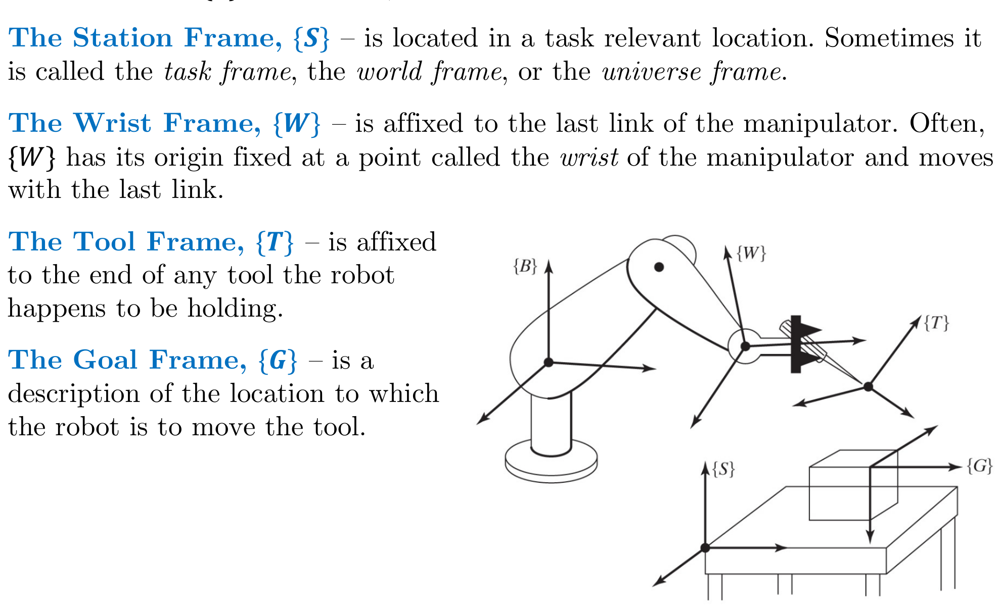
Key Equations Summary
DH Parameter Definitions (in terms of link frames) PDF p.12
| Parameter | Definition |
|---|---|
| $a_i$ | Distance from $\hat{Z}_i$ to $\hat{Z}_{i+1}$ measured along $\hat{X}_i$ |
| $\alpha_i$ | Angle from $\hat{Z}_i$ to $\hat{Z}_{i+1}$ measured about $\hat{X}_i$ |
| $d_i$ | Distance from $\hat{X}_{i-1}$ to $\hat{X}_i$ measured along $\hat{Z}_i$ |
| $\theta_i$ | Angle from $\hat{X}_{i-1}$ to $\hat{X}_i$ measured about $\hat{Z}_i$ |
General DH Transformation Matrix PDF p.19
$${}^{i-1}_i T = \begin{bmatrix} c\theta_i & -s\theta_i & 0 & a_{i-1} \\ s\theta_i \, c\alpha_{i-1} & c\theta_i \, c\alpha_{i-1} & -s\alpha_{i-1} & -d_i \, s\alpha_{i-1} \\ s\theta_i \, s\alpha_{i-1} & c\theta_i \, s\alpha_{i-1} & c\alpha_{i-1} & d_i \, c\alpha_{i-1} \\ 0 & 0 & 0 & 1 \end{bmatrix}$$Forward Kinematics Chain PDF p.18
$${}^0_N T = {}^0_1 T \; {}^1_2 T \; {}^2_3 T \; \cdots \; {}^{N-1}_N T$$Each transformation matrix ${}^{i-1}_i T$ converts coordinates expressed in frame $\{i\}$ into coordinates expressed in frame $\{i-1\}$. When you chain them as ${}^0_1 T \cdot {}^1_2 T \cdot \ldots \cdot {}^{N-1}_N T$, the superscript-subscript cancellation law ensures the intermediate frames "cancel out," giving a single transform from frame $\{N\}$ to frame $\{0\}$.
Matrix multiplication is not commutative ($AB \neq BA$ in general for rotation/transformation matrices). The order encodes the physical chain of the robot: base to link 1 to link 2 to ... to end-effector. Reversing or rearranging the order would correspond to a different (non-physical) chain of transformations.
An intuitive way to see this: if you have a point ${}^N P$ expressed in the end-effector frame, you first transform it into frame $\{N-1\}$ using ${}^{N-1}_N T$, then into frame $\{N-2\}$ using ${}^{N-2}_{N-1} T$, and so on. The rightmost matrix acts on the vector first, so the chain reads left-to-right as "from base toward tip" but acts right-to-left on vectors: ${}^0 P = {}^0_1 T \cdot {}^1_2 T \cdots {}^{N-1}_N T \cdot {}^N P$.
Superscript-Subscript Cancellation Law PDF p.18
$${}^{i-1}_i T = {}^{i-1}_R T \; {}^R_Q T \; {}^Q_P T \; {}^P_i T$$Standard DH vs. Modified DH Convention
Students using different textbooks will encounter two versions of the DH convention. This is a major source of confusion. Here is a clear comparison:
Standard (Classical / Distal) DH Convention
- Used by: Spong, Hutchinson & Vidyasagar; Paul; the original Denavit & Hartenberg (1955)
- Frame $\{i\}$ is attached at the distal end of link $i$ (i.e., at joint $i+1$)
- Transformation order: $\text{Rot}_{Z}(\theta_i) \cdot \text{Trans}_{Z}(d_i) \cdot \text{Trans}_{X}(a_i) \cdot \text{Rot}_{X}(\alpha_i)$
- The transform describes frame $\{i\}$ relative to frame $\{i-1\}$
Modified (Proximal) DH Convention
- Used by: Craig (Introduction to Robotics: Mechanics and Control) — likely your course textbook
- Frame $\{i\}$ is attached at the proximal end of link $i$ (i.e., at joint $i$)
- Transformation order: $\text{Rot}_{X}(\alpha_{i-1}) \cdot \text{Trans}_{X}(a_{i-1}) \cdot \text{Rot}_{Z}(\theta_i) \cdot \text{Trans}_{Z}(d_i)$
- The transform describes frame $\{i\}$ relative to frame $\{i-1\}$
Key differences at a glance:
| Aspect | Standard DH | Modified DH (Craig) |
|---|---|---|
| Frame origin on | Joint $i+1$ | Joint $i$ |
| Parameters in row $i$ | $\theta_i, d_i, a_i, \alpha_i$ | $\alpha_{i-1}, a_{i-1}, d_i, \theta_i$ |
| Transformation order | $R_z \cdot T_z \cdot T_x \cdot R_x$ | $R_x \cdot T_x \cdot R_z \cdot T_z$ |
| Subscript pattern | All subscript $i$ | Mixed: $i-1$ for link params, $i$ for joint params |
Critical point: Both conventions produce the same final result (${}^0_N T$) when applied correctly. They are mathematically equivalent. The difference is in how intermediate frames are placed and how the parameter table is organized.
This course uses the Modified (Craig) convention, which is why you see $\alpha_{i-1}$ and $a_{i-1}$ (with subscript $i-1$) in the DH table columns alongside $d_i$ and $\theta_i$ (with subscript $i$).
How to tell which convention a source uses: Look at the DH table column headers. If you see $a_{i-1}$ and $\alpha_{i-1}$, it is the modified (Craig) convention. If you see $a_i$ and $\alpha_i$ (all same subscript), it is the standard convention. Mixing conventions in a single problem will give wrong answers.
References:
- Craig, J.J. Introduction to Robotics: Mechanics and Control, 4th ed. Pearson, 2018.
- Comparison paper: "Comparison between Standard and Modified Denavit-Hartenberg Methods in Robotics Modelling"
- Wikipedia: Denavit-Hartenberg parameters
- Side-by-side visualization: VisRo Modified DH Model
Textbook References
Primary textbook (likely used in this course):
- Craig, J.J. Introduction to Robotics: Mechanics and Control, 4th ed. Pearson, 2018. Chapter 3 covers DH parameters in detail using the modified convention.
Alternative textbooks with DH parameter coverage:
- Spong, M.W., Hutchinson, S., and Vidyasagar, M. Robot Modeling and Control, 2nd ed. Wiley, 2020. Uses the standard DH convention. Chapter 3.
- Siciliano, B. et al. Robotics: Modelling, Planning and Control. Springer, 2009. Chapter 2.8. Covers both conventions.
- Murray, R.M., Li, Z., and Sastry, S.S. A Mathematical Introduction to Robotic Manipulation. CRC Press, 1994. Freely available online. Provides the most rigorous mathematical treatment including the geometric proof of DH parameter sufficiency.
- Corke, P. Robotics, Vision and Control. Springer, 2nd ed., 2017. Chapter 7. Emphasizes MATLAB-based computation.
Online course notes:
- Duke University: Chapter 3 - Forward Kinematics: The DH Convention
- ASU Robotics Course: Forward Kinematics (Wanxin Jin)
- Pranav Bhounsule's Handout: DH Convention Handout
$\alpha_i$ = link twist (about $X_i$)
$d_i$ = link offset (along $Z_{i-1}$)
$\theta_i$ = joint angle (about $Z_{i-1}$)
Rotate about $Z$, translate along $Z$, translate along $X$, rotate about $X$.
For revolute: axis of rotation.
For prismatic: axis of translation.
Prismatic: $d_i$ varies (translation along $Z_{i-1}$)
The other 3 parameters are always constants determined by the link geometry.
Chain multiplication of individual link transforms from base to end-effector.
Source: MSE 492 — Advanced Kinematics for Robotics System, Chapter 3 (22 slides)